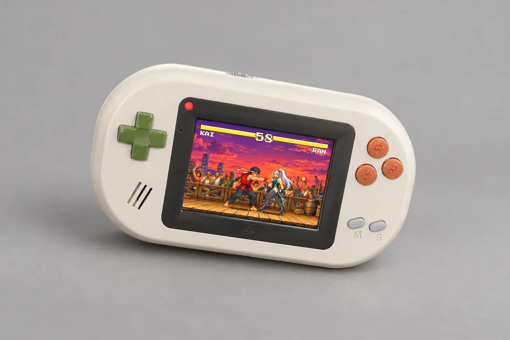
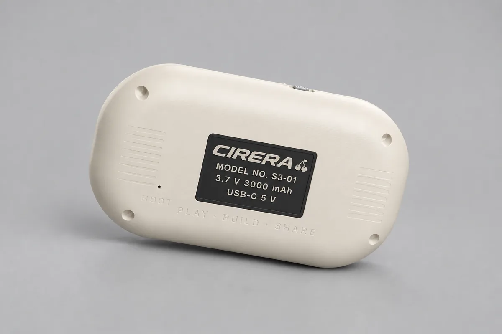

ESP32-S3 · 480×320 · 60 fps
Consola
La Cirera, el seu firmware per instal·lar des del navegador, la mateixa consola com a aplicació per al teu ordinador i RetroArch.
La Cirera
Una placa de desenvolupament amb pantalla, que es compra ja muntada. El motor l'esprem: dibuixa directament en franges, reparteix la feina entre els dos nuclis i guarda a la targeta el que no cap a la memòria.


- Placa
- Freenove FNK0104N
- Chip
- ESP32-S3R8, dos nuclis a 240 MHz
- Memòria
- 512 KB de RAM interna, 8 MB de PSRAM, 16 MB de flash
- Pantalla
- 3,5″, 480×320, ST77922 per QSPI, tàctil
- So
- ES8311 amb altaveu
- La resta
- microSD, bateria, USB
Instal·la el firmware des del navegador
- Connecta la placa a l'ordinador per USB.
- Prem el botó i tria el port de la placa.
- Espera uns minuts: arrenca amb 18 jocs a la memòria.
Versió 0.8.0 (5e62bd3) · 14,4 MB · els fitxers, per a esptool (s'obre en una pestanya nova)
La carcassa v1.0, dissenyada
Falta imprimir-la i provar-la. Llavors se'n publicaran els fitxers per imprimir (CC BY 4.0), la llista de peces i el muntatge. Mentrestant, ja es pot jugar amb la placa sola.
Com connectar-la (s'obre en una pestanya nova) · La placa de Freenove (s'obre en una pestanya nova)
Cirera al teu ordinador
La consola, feta aplicació per a Mac, Windows i Linux: el seu menú, els jocs d'exemple a dins i qualsevol joc de la Biblioteca. És el mateix motor, així que el joc és el mateix, amb teclat o amb comandament.
Obre-la la primera vegada
Encara no està signada per Apple ni per Microsoft, així que el sistema t'avisa la primera vegada.
Al Mac, descomprimeix el .zip, arrossega Cirera a Aplicacions i obre-la. Quan t'avisi, ves a Configuració del Sistema → Privacitat i seguretat i prem el botó per obrir-la igualment.
Al Windows, descomprimeix el .zip i obre Cirera.exe. Si surt l'avís que el Windows ha protegit l'ordinador, prem l'enllaç de més informació i després el botó per executar-la igualment.
A Linux, descomprimeix el .tar.gz i obre Cirera, dins de la seva carpeta. Per instal·lar jocs deixant-los anar a la finestra cal unzip, que gairebé totes les distribucions ja porten.
Afegeix jocs
Descarrega el .zip de qualsevol joc d'aquesta pàgina o de la Biblioteca i deixa'l anar sobre la finestra de Cirera: s'instal·la i surt al menú.
Juga
Fletxes per moure't; Z o Retorn és A, X o Esc és B, C és C i P és START. Toca la I (MENU) per obrir el menú del joc, amb «Sortir a la llista» per canviar de joc; si la mantens dos segons, tornes a la llista directament. F11 és la pantalla completa. Al comandament, X o Y fan de C, i SELECT de MENU. Les partides es desen al teu ordinador.
A RetroArch, RetroPie i RetroBat
Sense la consola? El motor també és un nucli de libretro: els jocs de pinyol es juguen a RetroArch i a tot el que s'hi basa, com RetroPie o Lakka en una Raspberry Pi, Batocera, Recalbox, les portàtils que el porten o un ordinador. És el mateix motor, així que el joc és el mateix.
Instal·la'l a RetroPie
A la Raspberry Pi, aquesta ordre descarrega el nucli ja compilat (una Pi 1 o Zero el compila, en uns minuts) i afegeix Pinyol a EmulationStation.
cd ~/RetroPie-Setup curl -fsSL --create-dirs \ -o ext/pinyol/scriptmodules/libretrocores/lr-pinyol.sh \ https://raw.githubusercontent.com/ipaud/pinyol/main/platform/libretro/lr-pinyol.sh sudo ./retropie_packages.sh lr-pinyolCopia els jocs
El .zip de qualsevol joc, com els que es descarreguen aquí, va a la seva carpeta.
~/RetroPie/roms/pinyol/Juga
Reinicia EmulationStation i apareix Pinyol amb els seus jocs. Al comandament, X o Y fan de C, i SELECT de MENU.
irm https://raw.githubusercontent.com/ipaud/pinyol/main/platform/libretro/retrobat-pinyol.ps1 | iexPosa el nucli i afegeix Pinyol a EmulationStation; els jocs van a roms\pinyolEncara sense provar en un RetroBat de debò.